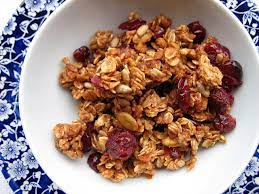

Roger's Granola

Toasted Granola that's easy to tweak
This tasty granola is easy to make at home, and is a great way to rationalize bulk grains in your pantry.
It's easy to tweak, just make sure you add a little more of the wet stuff if you add more dry stuff.
For best results, mix the dry together real well first or else it'll clump up when you add the wet components.
Ingredients
Dry mix:
- 3 cups whole oats (the thicker the better)
- 1 cup oat bran (wheat bran will work in a pinch)
- 1 cup coconut flakes (unsweetened and large flake works best)
- 1 cup sunflower seeds (any kind'll do, just make sure they're shelled of course)
- 1 and 1/2 cup chopped almonds (pre roasted is best)
Wet Mix:
- 1/3 cup olive oil
- 1/3 cup brown sugar
- 1/3 cup honey
Final Touch
- 1 cup dried cranberries (any dried fruit will do)
Steps
- Preheat oven to 275
- Mix the dry together in a big bowl
- Microwave the wet together for 1 minute, then stir
- Add the wet to dry
- Pour mix into large roasting pan
- Put in over for 20 minutes, then stir
- Put in for another 20, stir
- Take out, turn temp up to 325, stir, and put back in for 10 minutes
- Remove, toss in the 1 cup of dried fruit, and let cool
- Once cooled, bag it up for a tasty treat.
Notes
If you add in the dried fruit at the start they get too tough when baked. Best to add at the end as it cools.